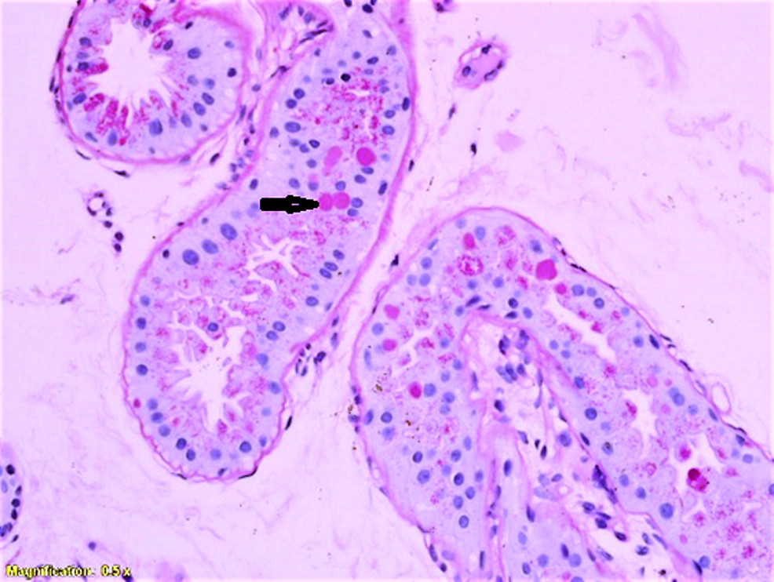

Lafora Disease

Lafora Progressive Myoclonus Epilepsy disease or Lafora Disease is an autosomal recessive inherited disorder which is most commonly present in humans and dogs.
Lafora Disease is extremely rare with roughly 4 cases per million people, making it difficult to gather mass data, forcing researchers to use mice to simulate the disease.
Initial diagnosis may be confused for a more common Juvenile Myoclonic Epilepsy (JME) which slows down the process to identify and inhibit Lafora Disease early.
History
Spanish neuropathologist Gonzalo Rodríguez Lafora (1886-1971) first described Lafora Disease in 1911. Lafora first documented inclusion bodies or small protein build-ups in affected patients' skin cells, which were named "Lafora bodies." Previously, no information seems to have been gathered as no observable differences with other epilepsy variants had been documented.
Symptoms
Diagnosis of Lafora Disease typically occurs through one of two methods:Serial single gene testing or a multigene panel may be used to find any abnormalities in genes if phenotypes imply the possible presence of Lafora Disease. If the phenotypes make it Exome sequences or Genome sequences. Exome sequencing consists of documenting only the protein producing gene region of DNA -called an exon- in a genome -called the exome.- The DNA is then sequenced and analyzed by available technology.
Genome sequencing consists of molecularly shearing small portions of DNA and feeding the information to a machine to analyze and compare to a "normal" genotype.
Symptoms of Lafora Disease include:
- Recurrent, Increasingly Intractable Seizures (Epilepsy)
- Ataxia (difficulty controlling muscles)
- Myoclonus
- Dementia
- Hallucinations
- Cognitive Difficulties
- Difficulty Walking
- Difficulty Eating
- Difficulty Speaking
- Cognitive Decline
Affected people tend to exhibit symptoms as an adolescent (12-18) and typically die approximately a decade after first expressing symptoms. Epileptic seizures occur often along with other neurological conditions, having a similar effect consistent to Parkinson’s Disease.
Genetics
Lafora disease is an autosomal recessive inherited disorder where symptoms appear in late childhood and teens.
A sample of 298 confirmed cases of Lafora Disease showed a mean age of 13.4 years when diagnosed, and about 9.1% of the population were adults.
More than half of patients diagnosed survived at least 11 years.
Percentages of Effects
The chances of losing autonomy in 110 cases of affected individuals was 45% at 5 years, 75% at 10 years, and 83% at 15 years, with full loss occurring on an average of 6 years. The average death rate was approximately 7% at 5 years, 25% at 10 years, and 17% at 15 years old.
As a non-sex related recessive disease, males and females are equally likely to contract Lafora Disease where both parents must be carriers or where one parent must be affected.
A simplified genetic inheritance pedigree is shown below.
Lafora disease causes death from neurodegeneration over time due to the build-up of intracellular cytoplasmic inclusions (Lafora bodies) in the central nervous system (brain/spinal cord), heart, muscle, and liver.
The Lafora bodies are polyglucosan build-ups of excessively long glycogen chains similar to Adult Polyglucosan Body Disease (APBD) where the chains become insoluble and unusable by the body, which also damages neuron cells. Typically,
Two genes are relevant in LD, the laforin glycogen phosphatase EPM2A/B and malin E3 ubiquitin ligase NHLRC1 genes, as discovered in the early 2000s.
Both genes are located on Chromosome 6 of a human where EPM2A on chromosome 6p24 and NHLRC1 on chromosome 6p22.
EPM2A codes for the laforin glucan phosphatase enzyme, believed to dephosphorylate glycogen to remove build-up in unsupported tissues such as the nervous system.
EPM2A has several other functions:
- Interact with other proteins (malin from the NHLRC1 gene) that enforce autophagy
- Help as a tumor inhibitor protein which prevents uncontrolled cell division.
NHLRC1 codes for the production of a protein called malin, which helps regulate autophagy of unneeded proteins. Malin marks the unnecessary proteins with the ubiquitin molecule, which is a signal to enforce autophagy in a process called the ubiquitin-proteasome system. This targets proteins including Laforin from the EPM2A gene, where malin regulates the amount of laforin proteins in the body similar to a quality control system.
EPM2A and NHLRC1 produce the laforin and malin proteins which are believed to break down the glycogen sugar build-ups together.
The Lafora bodies test positive in pathognomonic periodic acid (Schiff positive or PAS+), indicating excess glucose build-ups.
Lafora Disease occurs when gene mutations occur in the NHLRC1 and EPM2A creating serious issues:
- Laforin proteins decrease or are not produced at all:
- Regulation of glycogen size is stopped (now called Lafora bodies)
- Glycogen is hyperphosphorylated
- Glycogen chains increase in size rendering them insoluble
- Neurotoxic poisoning
Prognosis
There is no known cure as of now, and Lafora Disease is terminal in all cases documented. On average, affected victims die about 10 years after initial symptoms of epilepsy, with very few documented to survive past 40. The average/expected lifespan is about to age 26-36, with several outliers surviving in intensive care to past 50.
Treatments
As there is no known cure, the only possible treatments include anti-epileptic drugs to simply attempt to suppress symptoms.
The most common anti-epileptic drug prescribed is valproic acid, with several alternatives if unavailable or feasible, including topiramate, etho- suximide, phenobarbital, zonisamide, felbamate, and benzodiazepines.
In 2018, perampanel was shown to be effective at suppressing symptoms as an
α-amino- 3-hydroxy-5-methyl-4-isoxazole propionic acid (AMPA) receptor antagonist anti-epileptic drug (AED).
Dosage amounts will vary based on how severe symptoms are, with an epileptologist or neurologist for consult and advice.
Anti Epileptic Drugs (AEDs) can have serious side effects including:
- Reliance throughout life
- birth defects - pregnant females should consult a doctor on effects
- bone structure/health may deteriate
Surgery may be recommended for other kinds of epilepsy if several drugs are attempted but not allievated (known as "medically refractory epilepsy").
Other treatment options include vagal nerve stimulation in the neck for temporary allievation from status epilepticus, which is when a patient has chronic epileptic seizures.
The National Library of Medicine held experiments on the effectiveness of the ketogenic diet in the year 2000. According to the National Library's experiments, the diet was ineffective, which theoretically should have worked, as the ketogenic diet forces the body to consume lipids instead of carbohydrates. - This switch from carbohydrates to lipids for energy reduces the amount of glucose, reducing the amount of glycogen, which in turn, removes a fuel source for making Lafora bodies. - *However, relief in induced mice leads to the belief the patients were in an advanced stage instead, making this a potential option with further research.*
This process of removing fuel sources is not unlike cancer treatments by reducing glucose intake to slow tumor development.
Neurodegeneration over time results in the increasingly intensive care by others for an affected person’s life.
Support
People can help by donating to prominent rare disease or epilepsy foundations to help fund research into diseases and treatments.
Raising awareness for rare diseases and encouraging people to be aware of their genotypes can help reduce the occurrences of these diseases.
Epilepsy Foundations
Chelsea's Hope - Lafora Children Research FundEpilepsy Research Foundation
Disease Foundations
Global Genes - Allies in Rare DiseasesRare Diseases Awareness Foundation
Every Life Foundation for Rare Diseases
Resources
Nitschke, F., Ahonen, S. J., Nitschke, S., Mitra, S., & Minassian, B. A. (2018). Lafora disease - from pathogenesis to treatment strategies. Nature reviews. Neurology, 14(10), 606–617. https://doi.org/10.1038/s41582-018-0057-0
Aguado, C., Sarkar, S., Korolchuk, V. I., Criado, O., Vernia, S., Boya, P., Sanz, P., de Córdoba, S. R., Knecht, E., & Rubinsztein, D. C. (2010). Laforin, the most common protein mutated in Lafora disease, regulates autophagy. Human molecular genetics, 19(14), 2867–2876. https://doi.org/10.1093/hmg/ddq190
Pondrelli, F., Muccioli, L., Licchetta, L. et al. Natural history of Lafora disease: a prognostic systematic review and individual participant data meta-analysis. Orphanet J Rare Dis 16, 362 (2021). https://doi.org/10.1186/s13023-021-01989-w
Romá-Mateo, Carlos & Sanz, Pascual & Gentry, Matthew. (2012). Deciphering the role of malin in the Lafora progressive myoclonus epilepsy. IUBMB life. 64. 801-8. 10.1002/iub.1072.
Subramaniam Ganesh, Antonio V. Delgado-Escueta, Toshiro Sakamoto, Maria Rosa Avila, Jesus Machado-Salas, Yoshinobu Hoshii, Takumi Akagi, Hiroshi Gomi, Toshimitsu Suzuki, Kenji Amano, Kishan Lal Agarwala, Yuki Hasegawa, Dong-Sheng Bai, Tokuhiro Ishihara, Tsutomu Hashikawa, Shigeyoshi Itohara, Eain M. Cornford, Hiroaki Niki, Kazuhiro Yamakawa, Targeted disruption of the Epm2a gene causes formation of Lafora inclusion bodies, neurodegeneration, ataxia, myoclonus epilepsy and impaired behavioral response in mice, Human Molecular Genetics, Volume 11, Issue 11, 2002, Pages 1251–1262, https://doi.org/10.1093/hmg/11.11.1251
U.S. National Library of Medicine. (n.d.). EPM2A gene: Medlineplus genetics. MedlinePlus. Retrieved March 5, 2023, from https://medlineplus.gov/genetics/gene/epm2a/
U.S. National Library of Medicine. (n.d.). NHLRC1 gene: Medlineplus Genetics. MedlinePlus. Retrieved March 5, 2023, from https://medlineplus.gov/genetics/gene/nhlrc1/
U.S. Department of Health and Human Services. (n.d.). Lafora disease - about the disease. Genetic and Rare Diseases Information Center. Retrieved March 5, 2023, from https://rarediseases.info.nih.gov/diseases/8214/lafora-disease
Peer Reviewed Sources
Treatments
National Library of Medicine. (n.d.). Epilepsy: Medlineplus medical encyclopedia. MedlinePlus. Retrieved March 5, 2023, from https://medlineplus.gov/ency/article/000694.htm
Review Date 1/23/2022
Updated by: Joseph V. Campellone, MD, Department of Neurology, Cooper Medical School at Rowan University, Camden, NJ. Review provided by VeriMed Healthcare Network. Also reviewed by David Zieve, MD, MHA, Medical Director, Brenda Conaway, Editorial Director, and the A.D.A.M. Editorial team.
Jansen, A. C., & Andermann, E. (n.d.). Progressive myoclonus epilepsy, Lafora Type - NCBI Bookshelf. Retrieved March 5, 2023, from https://www.ncbi.nlm.nih.gov/books/NBK1389/
Reviewed
https://www.ncbi.nlm.nih.gov/books/NBK1389/#_lafora_Chapter_Notes_
21 February 2019 (ha) Comprehensive update posted live
22 January 2015 (me) Comprehensive update posted live
3 November 2011 (me) Comprehensive update posted live
28 December 2007 (me) Review posted live
2 January 2007 (ea) Original submission
Worby, C. A., Gentry, M. S., & Dixon, J. E. (n.d.). Laforin, a dual specificity phosphatase that dephosphorylates complex carbohydrates... JBC.
Retrieved March 5, 2023, from https://www.jbc.org/article/S0021-9258(19)89253-0/fulltext Received in revised form: August 10, 2006
Received: June 26, 2006
This work was supported by NCI, National Institutes of Health (NIH), Grant T32CA09523 (to M. S. G.), NIH Grants 18024 and 18849 (to J. E. D.), and the Walther Cancer Institute (to J. E. D.).
Currently published by Elsevier Inc; originally published by American Society for Biochemistry and Molecular Biology.
Images
J, DePaoli-Roach AA, Zhao X, Cortez MA, Pencea N, Tiberia E, et al. (2011) PTG Depletion Removes Lafora Bodies and Rescues the Fatal Epilepsy of Lafora Disease. PLoS Genet 7(4): e1002037. https://doi.org/10.1371/journal.pgen.1002037